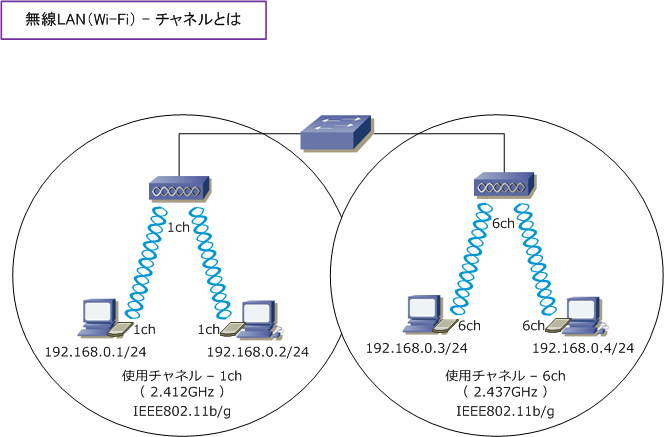
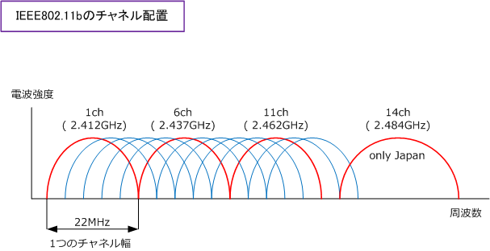
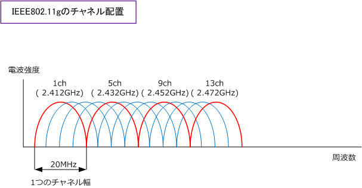
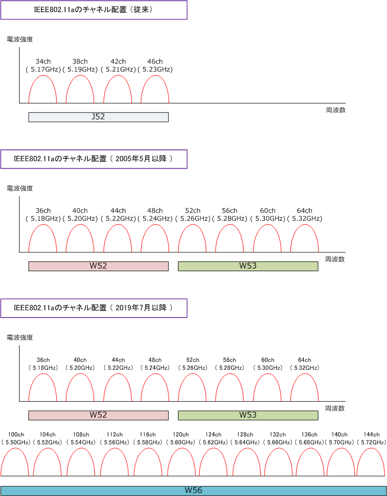
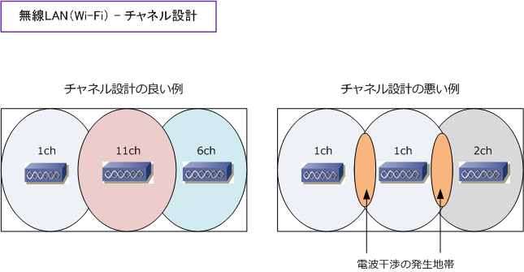

Wireless LAN - Channel
無線LAN - チャネルとは
無線LANにおいてチャネルとは、データの送受信に必要な周波数の幅のことを意味します。無線LANでは 無線LAN機器同士でデータを送受信するためには、同じチャネルを使用する必要があります。ここで言う 無線LAN機器同士というのは「無線LANクライアントとアクセスポイント同士」のことです。電波干渉を 防ぐために近くに存在するアクセスポイント同士で異なるチャネルを使用するように設定することが必要。

無線LAN - IEEE802.11b/g のチャネル
802.11b と 802.11g とでは同じ2.4GHzの周波数帯域を使用します。ただし、利用可能なチャネルは 802.11b が 1ch ～ 14ch の14になりますが、802.11gでは 1ch ～ 13ch の13となり数が異なります。 また、下図の通り同時使用チャネル数（ 電波干渉を起こさないで使用可能なチャネル数 ）については 802.11b では4つ（海外では3つ）、802.11g では4つとなります。下図の赤色チャネルが該当します。
802.11bでは1つのチャネル幅は 22MHz であり1つのチャネル幅の間隔は5MHzとなります。従って、 電波干渉を起こさないように5チャネル以上の間隔を空ける必要があります。以上から 802.11b では、 下図の通り、1ch/6ch/11ch/14ch（日本だけ）を使用するチャネル設計とすることが推奨となります。

802.11gでは1つのチャネル幅は20MHzであり1つのチャネル幅の間隔は5MHzとなります。従って、 電波干渉を起こさないように4チャネル以上の間隔を空ける必要があります。以上から802.11gでは、 理論上、1ch/5ch/9ch/13ch を使用するチャネル設計とすることが推奨となります。しかしながら、

802.11bを前提としない11gでも22MHz間隔で設計することを推奨しており、例えばCisco無線LAN製品で 無線ネットワークを構築した際に自動電波調整機能を使用すると 1ch/6ch/11ch などの3チャネルだけを 最適チャネルとして割り当てるようになります。当方の実績でも 1ch/6ch/11ch の使用が推奨となります。
無線LAN - IEEE802.11a のチャネル
IEEE802.11a では5GHzの周波数帯域を使用します。利用可能なチャネル数については現在 19 です。 そして、802.11aでは下図の通り、チャネル間の重なりがないことから19すべてを同時使用できます。 IEEE802.11aの場合、2005年5月及び2007年1月の省令改正により周波数帯域が変更となっています。 ※ 2019年7月以降、W56において144ch（5.72GHz）が追加されました。

無線LAN - 電波干渉について
無線LANの「電波干渉」は「周波数が重なる電波を発する機器」が近くにある時に発生する現象です。 特に IEEE802.11b/g が使用する2.4GHzの周波数は、電子レンジや医療機器などでも使用されている 過密地帯の周波数なのでよく干渉を受けることがあります。干渉が発生した場合は、通信速度の低下、 無線LAN通信の不可などの現象が発生します。アクセスポイント間の電波干渉を発生させないように アクセスポイントを設置する場合、チャネル間の重なり（ 周波数の重なり ）をなくすことが重要です。

※ 電波干渉とは、無線の受信側（PCなど）が受信すべき電波以外の電波も受信することで発生する通信状態の劣化のことです。 ※ 2.4GHz帯の電波は、APの種類にもよるが屋内では50m、屋外では100mは到達しますので事前のサイトサーベイは必須です。
※ 無線LANのチャネル設定は、APの自動のチャネル割り当て機能により自動調整させるのが一般的です。